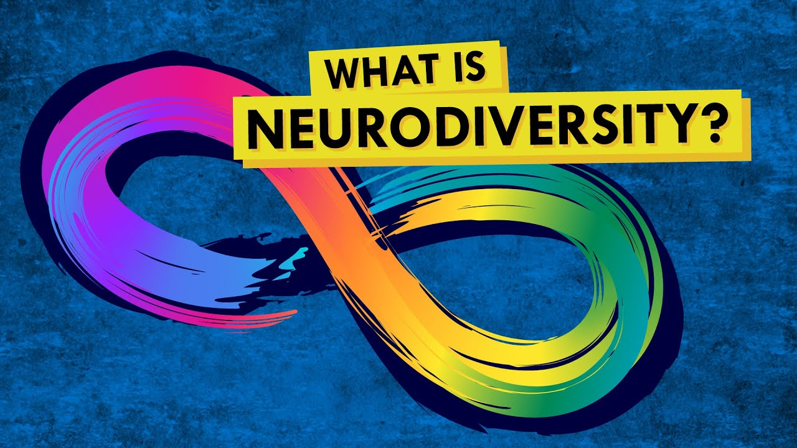
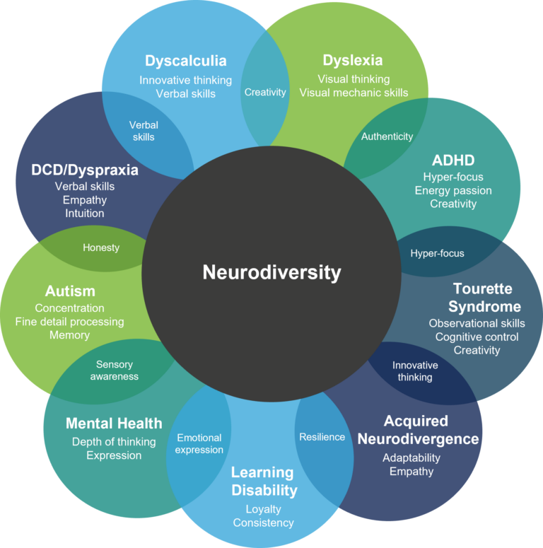
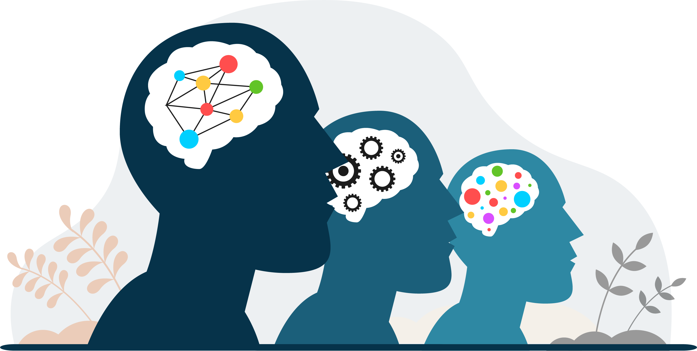

Neurodiversity has recently been more understood than ever before, so these big steps to erase the stigma around mental health or disabilities are finally being taken. Sadly, most K-12 programs don’t require psychology or similar classes – so many people enter their adult lives without understanding those different than them. This also leads many neurodivergent individuals to be undiagnosed and untreated throughout primary schooling; with many not understanding why they struggle so much with basic executive functions.
|  |
Neurodiversity is...the range of differences in individual brain function and behavioral traits, regarded as part of normal variation in the human population (used especially in the context of autistic spectrum disorders). |
Some neurodiverce disorders include...
|
 |
|  |
So, what is it like?Living with a neurodivergent mind changes everyday life in almost every way – especially since our ‘typical’ lives were created around a neurotypical lifestyle.A lot of individuals with ADHD struggle with executive functions that can make it extremely difficult to perform daily tasks. Alongside this, many neurodiverse people have very spesific sensory responses and can get overstimulated by unpleasant sensory experiences. Another example is in the different ways we process information while learning, which can be made very challenging when dealing with Dyslexia or Audio Processing Disorder. Accomodations are extremely important to neurodiverse individuals, and more are becoming readily availible to this day! |
If you learned any new information, feel free to leave feedback on our Form page!